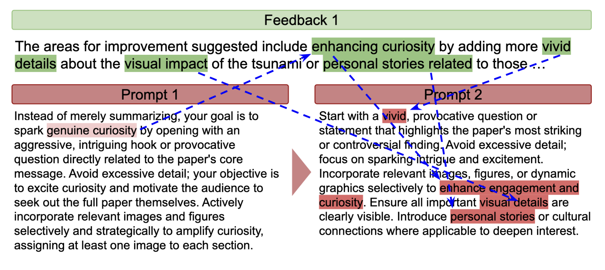
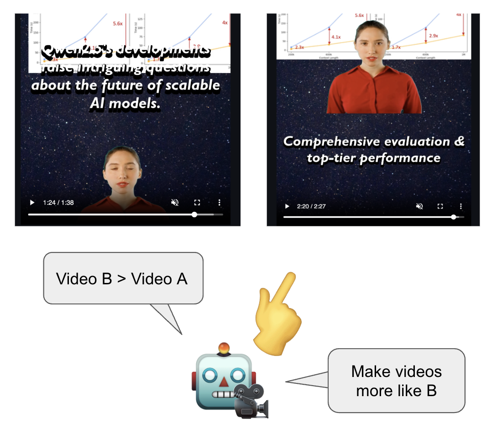

Example Video Generated by SciTalk: A short-form scientific explainer created using our multi-agent framework, grounded in original paper content and refined through iterative feedback loops.
Paper Link
Example Video Generated by SciTalk: A short-form scientific explainer created using our multi-agent framework, grounded in original paper content and refined through iterative feedback loops.
Paper Link
Multi-Agent Workflow: SciTalk mimics a human content creator’s pipeline by orchestrating a set of specialized LLM-based agents across four stages—Preprocessing, Planning, Editing, and Feedback & Evaluation. Each agent is responsible for a distinct subtask, such as summarization (Flashtalk Generator), scene design (Sceneplan Generator), text and layout (Text Assistant and Layout Allocator), and background selection.
Grounding in Source Material: During the Preprocessing and Planning stages, SciTalk scrapes scientific papers (e.g., from arXiv) to extract text, images, and figures. These are reused throughout the pipeline to ensure factual accuracy and visual grounding, rather than relying on generative visuals.
Iterative Feedback Loop: After the initial video composition, multimodal Feedback Agents (e.g., Flashtalk Feedback Agent, Sceneplan Feedback Agent) evaluate specific components using structured metrics. Reflector Agents then revise the original generation prompts based on this feedback, allowing each agent to improve its output in subsequent iterations.
Final Evaluation & Refinement: A separate Evaluation Agent provides an end-to-end quality check using human-aligned metrics, ensuring improvements across content accuracy, clarity, visual synchronization, and engagement. This setup mirrors how creators iteratively refine videos, resulting in progressively enhanced outputs.
Iterative Self-Feedback

Figure a

Figure b
Figure c
Setup
To emulate how human creators refine videos, SciTalk integrates an iterative feedback loop in its multi-agent framework. After generating an initial video draft, specialized multimodal agents evaluate individual sub-scenes based on domain-specific criteria (e.g., narrative coherence, visual clarity, pacing). This feedback is used to update prompts for the next iteration.
Process
Each feedback iteration involves three key steps:
Sub-scene Evaluation: Agents like the Flashtalk Feedback Agent and Sceneplan Feedback Agent rate specific aspects such as script engagement and scene structure using targeted metrics.
Prompt Refinement:Reflector Agents rewrite generation prompts using only relevant feedback for each agent type, ensuring domain-specific improvements without cross-agent interference.
Re-generation: Updated prompts are passed back to generation agents to revise the output for the next iteration.
Evaluation
We evaluated the impact of iterative refinement using both model-based and human assessments:
Model Evaluation: Multi-modal evaluators measured progression across 100+ video iterations using metrics like clarity, scientific integrity, and alignment.
Human Evaluation: Annotators compared early and late iterations of generated videos for improvements in narrative flow, visual consistency, and viewer engagement.


 , University of Minnesota
, University of Minnesota